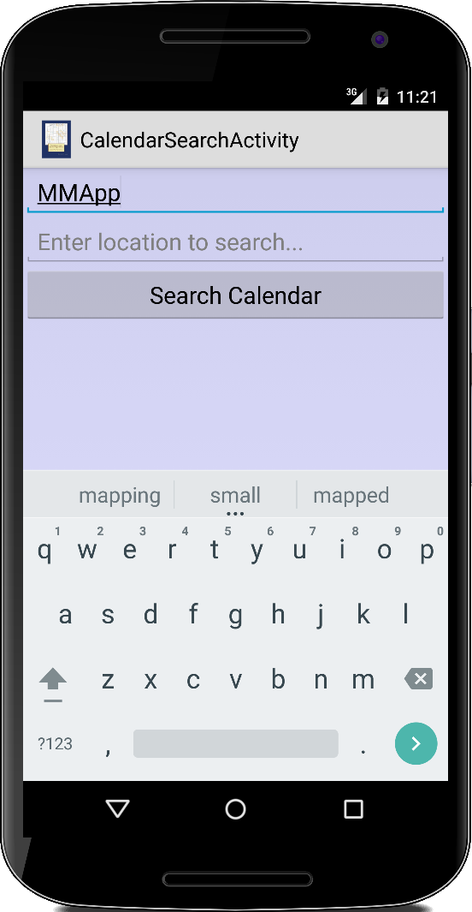

Persistence
Dieses Kapitel befasst sich mit der Datenpersistenz, d.h. dem Lesen und Schreiben von Daten in einen persistenten Speicher, normalerweise der SD-Karte. Abhängig von unseren Bedürfnissen gibt es verschiedene Möglichkeiten dies zu tun. Das können Dateien sein, die wir nur lesen wollen und die mit der App verpackt ausgeliefert werden sollen. Oder wir wollen kleinere oder größere Datenmengen auf die SD-Karte schreiben. Manchmal wollen wir aber auch mit strukturierten Daten arbeiten, in der Regel Datenbanken. Und schließlich gibt es auf Android noch die sogenannten "Content Provider": dabei handelt es sich um bereits bestehenden Datenbanken, die beispielsweise Kalender- und Kontaktinformationen des Nutzers speichern.
.
Resources
Wenn wir für unsere App ein paar Bilder oder kleinere Textdateien benötigen, also Dateien die wir nur lesen wollen, dann bietet sich das /res/raw/ Verzeichnis dafür an. Das Verzeichnis kann jede Art von Datei enthalten. Diese Dateien werden mit in der apk-Datei verpackt, d.h. sie werden mit unserer Anwendung ausgeliefert. Das ist zwar praktisch, bedeutet aber auch, dass die Größe unserer apk-Datei mit der Anzahl und Größe der Dateien die wir einbinden auch zunimmt.
Als kleine Anwendung wollen wir aus einer Textdatei names "test.txt" lesen:
InputStream is = getResources().openRawResource(R.raw.text);
BufferedReader r = new BufferedReader(new InputStreamReader(is));
StringBuilder total = new StringBuilder();
String line;
while ((line = r.readLine()) != null) {
total.append(line).append('\n');
}
Auch auf binäre Dateien können wir so zugreifen:
InputStream is2 = getResources().openRawResource(R.raw.mona_lisa);
Drawable d = Drawable.createFromStream(is2, null);
ImageView img = new ImageView(this);
img.setImageDrawable(d);
img.getLayoutParams().height = 800;
Ein kleiner Nachteil bei der Verwendung von Ressourcen ist, dass Dateien im Verzeichnis /raw/ keine Großbuchstaben oder Leerzeichen enthalten dürfen. Ein Vorteil ist hingegen, dass die Namen der Ressourcen bei der Kompilierung überprüft werden, so dass Tippfehler ausgeschlossen sind.

.
Assets
Assets sind den Ressourcen sehr ähnlich, sie werden auch zum Lesen von schreibgeschützten Daten verwendet, die sich aber in dem Verzeichnis /assets/ befinden. Sie werden auch in der apk-Datei verpackt. Das Asset Verzeichnis ist mehr wie ein Dateisystem und erlaubt eine Verzeichnisstruktur, was hilfreich ist, wenn wir viele Dateien haben. Außerdem folgen die Dateinamen den üblichen Namenskonventionen.
Der Zugriff auf Dateien im Asset-Verzeichnis ist fast gleich wie bei den Ressourcen:
InputStream is = getAssets().open("text.txt"); ... InputStream is2 = getAssets().open("Mona_Lisa.jpg"); ...
Der feine Unterschied ist, dass wir Strings statt Konstanten verwenden, um auf die Dateien zuzugreifen. Das bedeutet, dass der Compiler nicht mehr auf Tippfehler prüfen kann, aber es gibt uns mehr Flexibilität.
Der Vorteil von Ressourcen und Assets ist, dass sie zusammen mit dem apk verpackt und verteilt werden. Das ist aber auch der größte Nachteil. Und wir können nur aus ihnen lesen, schreiben ist nicht möglich.
.
 Shared Preferences
Shared Preferences
Häufig müssen wir in unseren Apps einfach nur ein paar Schlüssel-Wert-Paare speichern. Z.B. Einstellungen in unserer App oder einen Highscore in einem Spiel. Dafür kann man die Klasse SharedPreferences verwenden. Mit ihr kann man primitive Datentypen wie booleans, floats, ints, longs und Strings speichern.
Im Prinzip sind die SharedPreferences nichts anderes wie eine HashMap in der wir ja auch nur Key-Value Paare speichern. Als kleines Beispiel lesen wir einen String zu Beginn unserer Anwendung in der onCreate() Methode. Bevor unsere Anwendung beendet wird, also in der onStop() Methode speichern wir dann den evtl neuen Wert wieder ab.
@Override
protected void onCreate(Bundle savedInstanceState) {
...
SharedPreferences prefs = getPreferences(MODE_PRIVATE);
String txt = prefs.getString("KEY", "default");
...
}
@Override
protected void onStop() {
...
SharedPreferences prefs = getPreferences(MODE_PRIVATE);
SharedPreferences.Editor editor = prefs.edit();
editor.putString("KEY", et.getText().toString());
editor.commit();
...
}
Natürlich sollten SharedPreferences nur für kleinere Datenmengen verwendet werden.
Man kann auch im Bundle kleine Datenmengen speichern, gesehen haben wir das im Paint Beispiel des zweiten Kapitels.
.
 Internal Storage
Internal Storage
In Android hat jede Anwendung ein spezielles privates Verzeichnis (/data/data/packagename), das bei der Installation erstellt wird. Dieses befindet sich auf der internen SD Karte. Man kann da alles mögliche dauerhaft speichern. Als kleines Beispiel wollen wir die Zahl 42 in die Datei "test.data" schreiben und lesen:
FileOutputStream fos = openFileOutput("test.data", MODE_PRIVATE); fos.write( 42 ); fos.close(); FileInputStream fis = openFileInput("test.data"); int i = fis.read(); et.setText(""+i); fis.close();
.
Für den Zugriff auf das private Verzeichnis stehen zwei weitere interessante Methoden zur Verfügung. Mit fileList() können wir alle Dateien und Unterverzeichnisse auflisten und mit deleteFile() können wir Dateien löschen. Da der interne Speicher auf den meisten Geräten etwas eingeschränkt ist, sollten wir keine sehr großen Dateien in den internen Speicher ablegen.
.
.
External Storage
Wenn wir größere Datenmengen haben, oder wenn unsere Daten nicht privat sind, also z.B. wenn wir unsere Daten mit anderen Anwendungen teilen möchten, dann können wir die externe SD-Karte verwenden. Am Code ändert sich fast nichts:
FileOutputStream fos = new FileOutputStream("/sdcard/test.data");
Und analog für den InputStream.
Ein Unterschied besteht allerdings: unsere Anwendung muss um Erlaubnis fragen, damit sie auf die externe SD-Karte zugreifen kann. In der AndroidManifest.xml Datei müssen wir folgende Zeile einfügen:
<uses-permission android:name="android.permission.WRITE_EXTERNAL_STORAGE" />
Normalerweise verwendet man das private Verzeichnis für Daten, die kleiner als ein oder zwei Megabyte sind. Für größere Datenmengen sollte man die externe SD-Karte verwenden.
.
.
.
.
Serialization
Im zweiten Kapitel haben wir schon mal mit den Thema Serialization zu tun gehabt. Kurz gesagt geht es darum Objekte zu speichern, z.B. auf der Festplatte. Das Gegenstück dazu heißt deserialisieren, also ein Objekt wieder von der Festplatte zu laden. Das geht überraschend einfach mit den ObjectOutput- und ObjectInputStream Klassen.
Als Beispiel wollen wir unsere Kunstwerke (PaintingActivity) aus Kapitel drei serialisieren. Die Kunstwerke sind als Punkte in einer Liste gespeichert:
public class PaintingActivity extends Activity {
private List<Point> points = new ArrayList<Point>();
...
}
also müssen wir lediglich die Liste speichern, und das geht überraschend einfach:
FileOutputStream fos = openFileOutput(FILE_NAME, MODE_PRIVATE); ObjectOutputStream oos = new ObjectOutputStream(fos); oos.writeObject(points); oos.close(); fos.close();
Wir benötigen einen OutputStream, z.B. einen FileOutputStream. Diesen übergeben wir an einen ObjectOutputStream als Parameter. Das Speichern selbst geht dann über den Aufruf der Methode writeObject(). Wenn wir diese Zeilen in die onPause() Methode integrieren, werden unsere Kunstwerke jedesmal gespeichert wenn wir unsere Activity beenden.
Der umgekehrte Vorgang, also das Deserialisieren, geht komplett analog:
FileInputStream fis = openFileInput(FILE_NAME); ObjectInputStream ois = new ObjectInputStream(fis); Object obj = ois.readObject(); points = (List<Point>) obj; ois.close(); fis.close();
Hier benötigen wir also einen InputStream den wir an den ObjectInputStream übergeben, und per readObject() lesen wir dann unser Objekt wieder ein. Da der ObjectInputStream nicht wissen kann um was für ein Objekt es sich handelt, müssen wir ihm das noch sagen, deswegen der Cast. Wenn wir diese Zeilen in die onResume() Methode integrieren werden unsere Kunstwerke jedesmal geladen wenn die Activity neu startet.
Sind alle Klassen serialisierbar? Interessanterweise nein. Z.B. die Android Klasse "android.graphics.Point" die wir in der ursprünglichen Version der PaintingActivity verwendet haben ist nicht serialisierbar. D.h. damit das mit dem Serialisieren funktioniert, müssen wir unsere eigene Point Klasse schreiben. Das hört sich komplizierter an als es ist. Unsere Klasse muss lediglich das Serializable Interface implementiert:
class Point implements Serializable {
public int x;
public int y;
public Point(int x, int y) {
this.x = x;
this.y = y;
}
}
Interessanterweise muss man beim Serializable Interface gar keine Methode überschreiben. Ist ein bisschen wie Magie!
Eine Anmerkung noch: innere Klassen kann man nicht serialisieren, bzw. man kann sie nur zusammen mit ihren äusseren Klassen serialisieren.
.
Database
Obwohl viele Leute höllischen Respekt vor Datenbanken haben, sind die eigentlich gar nicht so schwer. Für uns ist eine Datenbank erst einmal ein paar Excel Tabellen. Als Beispiel beginnen wir mit einer Tabelle für Nutzer, wir nennen sie mal "User". Ein User hat einen Nachnamen, einen Vornamen und eine Email Adresse. In der Tabelle werden daraus Spalten (Columns). Die einzelnen Einträge für die Leute sind dann die Reihen (Rows). Bei Datenbank Tabellen fügt man dann meist noch eine Spalte für die "Id" ein: eine Id ist einfach ein Zähler, der bei 1 anfängt und für jeden neuen Eintrag um eins erhöht wird. Damit hat jeder Eintrag eine eigene Id und es kann nie doppelte Ids geben. Was aber passieren könnte, dass es zwei Leute mit dem gleichen Namen gibt. Gibt's ja auch in echt.

.
SQL
Die "Structured Query Language", kurz SQL [1], ist die Sprache die die meisten Datenbanken sprechen. Es ist eine etwas ältere Sprache (so wie Altgriechisch, sieht man daran, dass alles groß geschrieben ist und die Befehle immer weniger als acht Buchstaben haben), aber sie funktioniert immer noch recht gut.
Als erstes ist es immer eine gute Idee evtl. existierende Tabellen zu löschen. Das geht mit
DROP TABLE Users;
ganz einfach. Sollte man natürlich nur machen, wenn da keine wichtigen Daten drin waren, die sind nämlich sonst futsch.
Danach legen wir eine neue Tabelle an. Hierfür gibt es das "CREATE TABLE" Kommando:
CREATE TABLE Users (
Id INTEGER not null,
LastName VARCHAR(255) not null,
FirstName VARCHAR(255),
Email VARCHAR(255),
PRIMARY KEY (Id)
);
Wir sagen also, dass die Tabelle "Users" heißen soll, dass es eine Spalte Id geben soll die eine Ganzzahl sein soll und die immer einen Wert haben muss (not null). Dann deklarieren wir noch die anderen Spalten. Dabei heißt "VARCHAR(255)" soviel wie ein String der Länge 255 auf Altgriechisch. Am Ende sagen wir noch, dass "Id" der Primary Key sein soll.
Nachdem wir die Tabelle angelegt haben, wollen wir auch ein paar Daten einfügen, und das geht folgendermaßen:
INSERT INTO Users (Id, LastName, FirstName, Email)
VALUES (1,'Lano','Ralph','ralph@lano.de');
Ganz wichtig sind die Apostrophen, auch Single Quotes genannt. Das sind also die geraden Striche die von oben nach unten gehen, und sich weder leicht nach links, noch leicht nach rechts lehnen. Hört sich lustig an, ist aber wichtig: besonders beim Kopieren aus PDF Dateien passiert es nicht selten, dass die Apostrophen sich leicht zu neigen beginnen.
Und schließlich wollen wir mal schauen was inzwischen in unserer Tabelle alles drin steht, und das geht mit:
SELECT * FROM Users;
Es gibt dann noch ein DELETE und ein UPDATE Kommando, aber im Prinzip war's das schon.
.
SQLite
Teil von Android ist eine Datenbank namens SQLite [2]. Sie ist relativ einfach zu bedienen: Für jede Tabelle, die wir in unserer Datenbank haben wollen, erstellen wir eine Klasse, zum Beispiel die FriendsTable:
import static android.provider.BaseColumns._ID; ... public class FriendsTable extends SQLiteOpenHelper { public static final String TABLE_NAME = "friends"; public static final String LAST_NAME = "lastName"; public static final String FIRST_NAME = "firstName"; public static final String EMAIL = "email"; public FriendsTable(Context context, String name, CursorFactory factory, int version) { super(context, name, factory, version); } ... }
Die Klasse erweitert die SQLiteOpenHelper Klasse, was uns den Zugriff auf die SQLite Datenbank erleichtert, d.h. um die Low-Level Details müssen wir uns nicht kümmern. Es macht Sinn, Tabellen- und Spaltennamen als Konstanten zu deklarieren, das vermeidet Typos.
Was wir noch tun müssen, ist die beiden Methoden onCreate() und onUpdate() zu überschreiben. Die erste wird benötigt, da wir beim ersten Start unseres Programms alle Tabellen in der Datenbank anlegen müssen. Die zweite wird benötigt, wenn wir unsere Tabellen ändern, d.h. eine neue Spalte hinzufügen, eine entfernen oder ihre Eigenschaften ändern wollen. Normalerweise will man bei einem Update nicht alle vorhandenen Daten löschen, aber in unserem einfachen Fall ist es genau das, was wir tun:
@Override public void onCreate(SQLiteDatabase db) { db.execSQL("CREATE TABLE " + TABLE_NAME + " (" + _ID + " INTEGER PRIMARY KEY AUTOINCREMENT, " + LAST_NAME + " TEXT NOT NULL," + FIRST_NAME + " TEXT NOT NULL," + EMAIL + " TEXT NOT NULL);"); } @Override public void onUpgrade(SQLiteDatabase db, int oldVersion, int newVersion) { db.execSQL("DROP TABLE IF EXISTS " + TABLE_NAME); onCreate(db); }
Wenn wir genau hinsehen, erkennen wir unsere SQL Kommandos CREATE und DROP.
Creating the Database
Als erstes müssen wir eine Datenbank erstellen. Das machen wir am besten in der onCreate() Methode unserer Activity:
public class DatabaseActivity extends Activity {
private static final String DATABASE_NAME = "friends.db";
private static final int DATABASE_VERSION = 6;
private FriendsTable friends;
@Override
public void onCreate(Bundle savedInstanceState) {
friends = new FriendsTable(this, DATABASE_NAME, null, DATABASE_VERSION);
...
}
}
Wenn wir eine neue FriendsTable erstellen, prüft das System, ob die Datenbank "friends" bereits existiert. Wenn das der Fall ist, dann wird es diese einfach öffnen. Ist das nicht der Fall, wird eine neue Datei namens "friends.db" im Verzeichnis "/data/data/package_name/databases" erstellt. Die gesamte Datenbank wird in dieser einen Datei gespeichert, was natürlich bedeutet, dass die Größe unserer Datenbank durch die Größe die maximale Dateigröße begrenzt ist. Man kann sich die Datenbankdatei in der FileExplorer Ansicht ansehen.
Noch etwas: Jedes Mal, wenn wir eine unserer Tabellen ändern, müssen wir eine neue Datenbankversion anlegen, d.h. die Konstante'DATABASE_VERSION' sollte um Eins erhöht werden.
Inserting Data
Sobald die Datenbank fertiggestellt ist, können wir Daten einfügen. Da unsere FriendsTable Klasse die SQLiteOpenHelper Klasse erweitert, gibt es die getWriteableDatabase() Methode. Diese gibt uns ein SQLiteDatabase Objekt zurück, mit dem wir dann Daten in unsere Tabelle einfügen können:
private void addFriend(String lastName, String firstName, String email) {
SQLiteDatabase db = friends.getWritableDatabase();
ContentValues values = new ContentValues();
values.put(FriendsTable.LAST_NAME, lastName);
values.put(FriendsTable.FIRST_NAME, firstName);
values.put(FriendsTable.EMAIL, email);
db.insert(FriendsTable.TABLE_NAME, null, values);
}
Falls etwas schief geht, wird eine Exception ausgelöst.
Reading Data
Schließlich müssen wir in der Lage sein, aus unserer Datenbanktabelle zu lesen. Auch hier verwenden wir das SQLiteDatabase Objekt, allerdings in der read-only Version. Die Syntax bezieht sich auf die Syntax der SQL SELECT-Anweisung:
private Cursor getFriends() {
SQLiteDatabase db = friends.getReadableDatabase();
String[] FROM = { _ID, FriendsTable.LAST_NAME,
FriendsTable.FIRST_NAME, FriendsTable.EMAIL, };
Cursor cursor = db.query(FriendsTable.TABLE_NAME, FROM,
null, null, null, null,
FriendsTable.LAST_NAME + " DESC");
startManagingCursor(cursor);
return cursor;
}
DIe Methode query() hat dabei Platz für folgende Parameter: den Tabellennamen, die Selection, die Selection Argumente, GroupBy, Having, und OrderBy Argumente.
Die Methode getFriends() gibt uns einen Cursor zurück, der das Ergebnis der Abfrage enthält. Der Cursor ist ein Iterator, mit dem wir über die zurückgegebenen Werte iterieren können:
private void showFriends(Cursor cursor) {
StringBuffer sb = new StringBuffer();
while (cursor.moveToNext()) {
long id = cursor.getLong(0);
sb.append(id).append(": ");
sb.append(cursor.getString(1)).append(", ");
sb.append(cursor.getString(2)).append(", ");
sb.append(cursor.getString(3)).append("\n");
}
textView1.setText( sb.toString() );
}
Das war's.
Updating and Deleting
Zwei weitere Operationen, die wir ausführen können, sind das Aktualisieren und Löschen vorhandener Einträge. Die folgenden zwei Methoden zeigen, wie man das macht:
private void deleteFriend(int rowID) {
SQLiteDatabase db = friends.getWritableDatabase();
String where = _ID + "=" + rowID;
db.delete(FriendsTable.TABLE_NAME, where, null);
}
private void updateFriend(int rowID, String lastName, String firstName, String email) {
SQLiteDatabase db = friends.getWritableDatabase();
ContentValues values = new ContentValues();
values.put(FriendsTable.LAST_NAME, lastName);
values.put(FriendsTable.FIRST_NAME, firstName);
values.put(FriendsTable.EMAIL, email);
String where = _ID + "=" + rowID;
db.update(FriendsTable.TABLE_NAME, values, where, null);
}
.
Raw Queries
Falls wir die Sprache SQL beherrschen, können wir auch reines SQL mit der Methode rawQuery() ausführen:
private long getNumberOfFriendsWithRawQuery() {
SQLiteDatabase db = friends.getReadableDatabase();
String[] FROM = { _ID, FriendsTable.LAST_NAME, FriendsTable.FIRST_NAME, FriendsTable.EMAIL, };
Cursor cursor = db.rawQuery(String.format("select count(*) from %s", FriendsTable.TABLE_NAME), null);
cursor.moveToFirst();
long count = cursor.getLong(0);
cursor.close();
return count;
}
Dies ist nicht unbedingt empfehlenswert, aber eine Option.
.
Content Provider
Kommen wir kurz zu den Content-Provider: Bei den Content-Provider handelt es sich um bereits vorgefertigte Datenbanken die mit Android kommen. Man kann natürlich auch seinen eigenen Content-Provider schreiben, aber normalerweise verwendet man die bereits existierenden, als da sind:
- ContactsContract: erlaubt Zugriff auf die Kontakte.
- CalendarContract: erlaubt Zugriff auf den Kalender.
- MediaStore: listet alle Mediendateien auf dem Gerät.
- Browser: erlaubt Zugriff auf Lesezeichen, Browserverlauf und Suchanfragen.
- CallLog: enthält Informationen über die Anrufhistorie.
- UserDictionary: erlaubt Zugriff auf benutzerdefinierte Wörter.
- Settings: erlaubt Zugriff auf die Geräteeinstellungen.
Wir werden uns die ersten drei in den Projekten näher ansehen.
.
ORM
Wir sind inzwischen im 21. Jahrhundert und leben in einer objekt-orientierten Welt. Auf eine Datenbank mittels SQL zuzugreifen ist vielleicht aus historischen Gründen noch interessant (oder falls Sie pro Zeile Code bezahlt werden), aber normalerweise würde man versuchen, ein Objekt-Relational Framework (ORM) zu verwenden. Das erledigt für uns den größten Teil der Fußarbeit und wir können uns auf die Kopfarbeit konzentrieren.
Als Beispiel, werfen wir kurz einen Blick auf das Sugar ORM Framework [3]. Es ist ziemlich einfach einzurichten und es ist Open Source. Um das Sugar ORM Framework nutzen zu können, müssen wir zwei Bibliotheken, sugar-1.4.jar und guava-19.0.jar, zu unserem Projekt hinzufügen. Als zugrundeliegende Datenbank wird SQLite verwendet.
Configuration
Bevor wir Sugar ORM verwenden können, müssen wir noch die folgenden Zeilen zur AndroidManifest Datei hinzufügen:
...
<activity
android:name="variationenzumthema_ch5.ORMActivity"
android:label="ORMActivity" >
</activity>
<meta-data
android:name="DATABASE"
android:value="orm_sugar_example.db" />
<meta-data
android:name="VERSION"
android:value="2" />
<meta-data
android:name="QUERY_LOG"
android:value="true" />
<meta-data
android:name="DOMAIN_PACKAGE_NAME"
android:value="variationenzumthema_ch5" />
...
Das Paket sollte dasjenige sein, in dem sich unsere ORMActivity befindet.
POJO
Zuerst müssen wir die Klasse deklarieren, die wir in der Datenbank speichern wollen, hier die Klasse Book:
public class Book extends SugarRecord {
@Unique
String isbn;
String title;
String author;
// Default constructor is necessary for SugarRecord
public Book() {
}
public Book(String isbn, String title, String author) {
this.isbn = isbn;
this.title = title;
this.author = author;
}
}
Sugar ORM erstellt daraus eine Datenbanktabelle namens BOOK mit einer Spalte für jede Instanzvariable. Sugar verwendet Reflection, deswegen müssen wir einen Standardkonstruktor zur Verfügung stellen, auch wenn er nichts tut.
Writing and Reading
Schreiben und Lesen mit Sugar ORM ist sehr einfach: wir müssen lediglich unseren Code mit den Methoden SugarContext.init() und SugarContext.terminate() umgeben:
SugarContext.init(this); // create new book: Book book1 = new Book("1530651840", "Java", "Ralph Lano"); book1.save(); // load entity: Book book2 = Book.findById(Book.class, 1); SugarContext.terminate();
Der Rest ist ganz einfach: Wir sagen unserem Buch einfach, dass es sich mit save() speichern soll, und wenn wir nach einem Buch suchen, verwenden wir die findById() Methode.
Sugar ORM ermöglicht auch komplexere Abfragen:
List<Book> books = Book.findWithQuery(
Book.class,
"SELECT * FROM Book WHERE isbn LIKE ?",
"153%");
Wenn dies an Stored Procedures erinnert, dann ist es nicht verwunderlich, denn das ist es auch.
Wir können auch Bücher löschen,
Book book2 = Book.findById(Book.class, 1); book2.delete();
und updaten,
Book bookOne = new Book("1530651840", "Java", "Ralph P. Lano");
bookOne.update();
Wenn wir alle Bücher brauchen, dann gibt es dafür die findAll() Methode:
Iterator<Book> booksIt = Book.findAll(Book.class);
Auch das Einfügen von mehreren Büchern in Einem ist möglich:
List<Book> books = new ArrayList<>();
books.add(new Book("1530651840", "Java", "Ralph Lano"));
books.add(new Book("1545467463", "Algorithmen", "Ralph Lano"));
books.add(new Book("1537765469", "Internet", "Ralph Lano"));
SugarRecord.saveInTx(books);
Sugar ORM ist nicht ganz so leistungsfähig wie Hibernate oder JDO, aber es unterstützt One-To-One und One-To-Many Beziehungen. Also für die meisten unserer täglichen Bedürfnisse, ist es gut genug. Wenn wir etwas Ausgefalleneres brauchen, dann gibt es z.B. Room von Google [4] oder auch greenDAO [5] ist einen Blick wert.
.
Online Storage
Eine weitere Möglichkeit, um unsere Daten zu speichern, ist online. Natürlich kann man sich da selbst was überlegen, z.B. mit einem RESTful Webservice. Aber es gibt auch andere interessante Lösungen. Da ist z.B. Firebase von Google [6], das im Grunde eine Datenbank in der Cloud ist. Ein kleines Problem mit den Online-Speichern ist, was passiert, wenn wir offline sind? Nun, die Realm-Datenbank [7] versucht, dieses Problem zu lösen.
.
Review
In diesem Kapitel haben wir gelernt wie wir Daten permanent speichern können. Dabei haben wir gesehen wie man mit Resourcen und Assets Dateien als Teil der App ausliefern können. Wir haben SharedPreferences kennen gelernt und auch gesehen wie man auf die interne und externe SD Karte zugreifen kann. Schließlich haben wir gesehen wie man mit der eingebauten Datenbank strukturierte Daten bearbeiten können. Wir haben Content-Provider kurz angesprochen und auch bei ORM haben wir uns kurz aufgehalten.
.
Projekte
In den Projekten wollen wir zunächst Resourcen und Assets vertiefen, dazu erinnern wir uns an ein paar Beispielen aus dem zweiten Buch, wie z.B. einen SpellChecker oder ein Wörterbuch. Als anspruchsvolleres Beispiel sehen wir uns auch noch einmal den UBahnnavigator an. Ein einfacher Texteditor demonstriert das Lesen und Schreiben auf die externe SD Karte. Und danach folgen noch ein paar Beispiele zu ContentProvidern wo wir auf den Kalendar, die Kontakte und die Musik Provider zugreifen.
.
SpellChecker
Die UI des SpellChecker besteht aus einem EditText und einem Button. Nachdem der Nutzer ein Wort eingegeben hat und auf den "Spell Check" gedrückt hat, checken wir ob das eingegebene Wort in unserem Wörterbuch zu finden ist. Über einem Toast geben wir dem Nutzer dann Rückmeldung.
Wenn wir noch mal kurz im zweiten Semester nachsehen, dort haben wir dafür ein HashSet verwendet. Das HashSet befüllen wir mit allen Wörter der englischen Sprache,
Set<String> words = buildIndexFromFile("dictionary_en_de.txt");
und verwenden dann die contains() Methode um festzustellen ob das Wort richtig geschrieben wurde:
String word = readLine("Enter word to check: ");
if (words.contains(word.toLowerCase())) {
println("Spelling is correct.");
} else {
println("Spelling is NOT correct.");
}
Das Wörterbuch könnten wir entweder als Resource oder als Asset speichern.
.
.
RhymeHelper
Ganz analog zum SpellChecker können wir auch unsere Reim-Anwendung aus dem zweiten Semester auf Android portieren. Für die UI benötigen wir einen EditText, einen Button und einen TextView. Die Logik können wir eins-zu-eins aus dem zweiten Semester übernehmen.
Die Datenstruktur die wir damals verwendet haben war der Trie. Wenn wir also Worte suchen die sich auf "cool" reimen, dann suchen wir nach allen Worten die auf "ool" enden. Der Trick ist die Worte falsch herum in einen Trie zu speichern.
Wir instanziieren den Trie:
private SimpleTrie trie = new SimpleTrie();
und in den Trie schreiben wir einfach unser gesamtes Wörterbuch
loadLexiconFromFile("dictionary_en_de.txt");
Beim Einfügen in den Trie
trie.add( reverseString(en.toLowerCase()) );
achten wir aber darauf, dass wir alle Worter falsch herum einfügen. Wenn wir dann nach Reimen suchen, ist das ganz einfach:
String word = readLine("Enter word to rhyme: ");
for (String s : trie.nodesWithPrefix( reverseString(word) )) {
println( reverseString(s) );
}
Ganz perfekt ist die Anwendung nicht, denn sie findet nur exakte Reime. Besser wäre es wahrscheinlich einen abgewandelten SoundEx oder Metaphone Algorithmus zu verwenden.
.
Languages
Wir wollen unser Übersetzungsprogramm aus dem zweiten Semester aufs Handy portieren. Die UI besteht wieder aus einem EditText und einem Button. Für die Anzeige der Übersetzungen bietet sich die Möglichkeit einen ListView zu verwenden, um alle Übersetzung gleichzeitig anzuzeigen.
Wir verwenden eine Map die einen String als Key hat (das englische Wort) und als Value eine List von Strings (die Übersetzungen). Das Wörterbuch können wir entweder als Resource oder als Asset speichern.
.
.
.
.
.
.
.
.
.
UniversalTranslator
Die Idee hinter dem UniversalTranslator ist es, einen Satz aus dem Englischen in eine (fast) beliebige andere Sprache zu übersetzen. Allerdings nur Wort für Wort. Wir nehmen den Logik Code vom obigen Beispiel. Auch die UI ist ganz ähnlich: einen EditText zum Eingeben, einen Spinner mit dem wir die Sprache auswählen und einen TextView um die Übersetzung anzuzeigen. Das Wörterbuch können wir entweder als Resource oder als Asset speichern.
.
.
.
.
.
.
.
.
.
.
 Subway
Subway
Die Subway Activity besteht aus zwei Spinnern, einen Button und einem TextView. Der Nutzer wählt den Abfahrts- und Zielbahnhof über die beiden Spinner aus. Über den Button wird dann die Suche nach der kürzesten Strecke ausgelöst. Das Ergebnis wird dann im TextView angezeigt. Die Datei mit den Verbindungsdaten können wir entweder als Resource oder als Asset speichern.
Bzgl der Logik bedienen wir uns wieder dem Beispiel aus dem zweiten Semester.
.
.
.
.
.
.
.
.
.
Synonyms
Beim Synonymbrowser geht es darum ausgehend von einem Wort dessen Synonyme in einer Liste anzuzeigen. Klickt der Nutzer dann auf eines dieser Synonyme, wird dieses Wort als Ausgangswort genommen. Auf diese Art kann man ganz interessante Reisen durch den Synonymgraphen machen.
Die UI ist identisch zu der in der Languages Activity: ein EditText, ein Button und ein ListView. Die Logik wie man durch den Synonymgraphen navigiert kommt wieder aus dem zweiten Semester. Die Datei mit den Synonympaaren können wir entweder als Resource oder als Asset speichern.
.
.
.
.
.
.
.
.
.
HelpPages
Jede App benötigt ein Impressum, evtl. sogar eine Datenschutzerklärung, u.U. vielleicht auch noch Hilfeseiten. Hier gibt es verschiedene Möglichkeiten das umzusetzen. Man könnte eine eigene UI schreiben. Der Nachteil ist, dass das bei Änderungen nicht einfach zu pflegen ist. Man könnte die Seiten als HTML Seiten im Internet hosten. Der Nachteil hier ist, dass die Seiten offline dann nicht zur Verfügung stehen.
Eine dritte Möglichkeit ist, das WebView Widget zu verwenden. Der Vorteil dieser Variante ist, dass wir für unseren Website und für unsere App die gleichen Inhalte pflegen können. Das WebView Widget, das auch Androids hauseigenem Browser verwendet, kann HTML und CSS darstellen. Die Webseiten selbst, inklusive Stylesheets und Bilder, laden wir aus dem Resource Verzeichnis (/res/raw/).
Damit auch Links funktionieren, müssen wir unsere HTML Seiten ein klein wenig modifizieren. Z.B. die index.html, sieht wie folgt aus:
<html> ... <link rel="stylesheet" type="text/css" href="style.css"> ... <img alt="" src="img0.jpg" style="width: 96px; height: 125px" /> ... <a href="int:0">Impressum</a> <a href="int:1">Privacy Statement</a> <a href="int:2">License</a> ... </html>
Also Links zu Stylesheets und Bildern sind einfach relative Links. Allerdings Links zu anderen lokalen Seiten, ändern wir in "int:0" um. Dabei sind die Seiten einfach mit 0, 1, 2, ... durchnumeriert, und "int" steht für intern.
In der onCreate() Methode unserer HelpPagesActivity initialisieren wir den WebView:
public class HelpPagesActivity extends Activity {
@Override
protected void onCreate(Bundle savedInstanceState) {
super.onCreate(savedInstanceState);
this.setTitle("Help");
WebView webView = new WebView(this);
webView.setWebViewClient(new HelpPagesWebViewClient());
String html = readFile("");
webView.loadDataWithBaseURL("file:///android_res/raw/", html, "text/html", "UTF-8", null);
webView.getSettings().setBuiltInZoomControls(true);
webView.getSettings().setSupportZoom(true);
setContentView(webView);
}
Die readFile() Methode liest eine gewünschte Datei aus dem Resource Verzeichnis:
private String readFile(String pageNr) {
Field f = null;
...
f = R.raw.class.getField("index" + pageNr);
StringBuffer sb = new StringBuffer();
InputStream htmlStream = getResources().openRawResource(f.getInt(null));
BufferedReader is = new BufferedReader(new InputStreamReader(htmlStream, "UTF8"));
String line;
while ((line = is.readLine()) != null) {
sb.append(line);
}
is.close();
...
return sb.toString();
}
Interessant ist noch die HelpPagesWebViewClient Klasse: sie sorgt dafür, dass die internen Links funktionieren, indem sie die Methode shouldOverrideUrlLoading() überschreibt:
private class HelpPagesWebViewClient extends WebViewClient {
@Override
public boolean shouldOverrideUrlLoading(WebView view, String url) {
if (url.startsWith("int:")) {
String html = readFile(url.substring(4));
view.loadDataWithBaseURL("file:///android_res/raw/", html, "text/html", "UTF-8", null);
view.getSettings().setBuiltInZoomControls(true);
view.getSettings().setSupportZoom(true);
}
return true;
}
}
.
Editor
Wie schwer ist es denn einen kleine Texteditor zu schreiben? Im Prinzip besteht doch ein Texteditor nur aus einem EditText und zwei Knöpfen zum Öffnen und Speichern. Beim EditText müssen wir ein paar Attribute setzen, damit er das macht was er soll:
<EditText
android:id="@+id/editText"
android:layout_width="match_parent"
android:layout_height="match_parent"
android:fontFamily="monospace"
android:gravity="top|left"
android:inputType="textMultiLine"
android:scrollHorizontally="false"
android:scrollbars="vertical"
android:text=""
android:textSize="16sp" />
Die beiden Knöpfe kann man am einfachsten über ein IconMenu wie wir es im zweiten Kapitel gemacht haben implementieren.
Um Dateien zu suchen verwenden wir am besten die Klasse FileChooser die der Autor Roger Keays freundlicherweise unter die Public Domain Lizenz gestellt hat [8]. Diese müssen wir in der onCreate() initialisieren:
public class EditorActivity extends Activity implements FileSelectedListener { private EditText et; private FileChooser fc; private File currentFile; @Override public void onCreate(Bundle savedInstanceState) { super.onCreate(savedInstanceState); setContentView(R.layout.editor_activity); et = (EditText) findViewById(R.id.editText); currentFile = android.os.Environment.getExternalStorageDirectory(); fc = new FileChooser(this, currentFile.getAbsolutePath()); fc.setFileListener(this); } ... }
Interessant ist auch der kleine Trick, wie wir das Android Betriebssystem fragen können wo denn genau bitte der External Storage ist. Der ist nämlich nicht bei allen Geräten an der gleichen Stelle, wenn er denn überhaupt vorhanden ist. Mit der showDialog() Methode können wir den FileChooser dann anzeigen lassen,
fc.showDialog();
die dann, wenn der Nutzer eine Datei ausgewählt hat, die Methode fileSelected() aufruft (hat damit zu tun, dass wir oben das FileSelectedListener Interface implementiert haben):
public void fileSelected(File file) {
currentFile = file;
try {
StringBuffer sb = new StringBuffer();
BufferedReader br = new BufferedReader(new FileReader(file));
while (true) {
String line = br.readLine();
if (line == null)
break;
sb.append(line + "\n");
}
br.close();
et.setText(sb);
} catch (Exception e) {
Log.e("EditorActivity", e.getMessage());
}
}
Kommen wir zum Speichern: dafür lässt sich der AlertDialog.Builder gut verwenden. Wir haben ihn schon mal in er DialogActivity im zweiten Kapitel gesehen. Jetzt geben wir ihm aber einen EditText, was wir mit dem Aufruf von dialog.setView() bewirken:
private void openSaveFileDialog() {
AlertDialog.Builder dialog = new AlertDialog.Builder(this);
dialog.setTitle("Save");
final EditText input = new EditText(this);
input.setText(currentFile.getAbsolutePath());
dialog.setView(input);
dialog.setPositiveButton("Save", new DialogInterface.OnClickListener() {
public void onClick(DialogInterface dialog, int which) {
String fileName = input.getText().toString();
saveFile(fileName);
}
});
dialog.setNegativeButton("Cancel", new DialogInterface.OnClickListener() {
public void onClick(DialogInterface dialog, int which) {
dialog.cancel();
}
});
dialog.show();
}
Der Rest ist ziemlich selbsterklärend, wir sind ja schon im 6. Semester, oder?
.
CalendarSearch
Um uns ein bisschen mit den ContentProvidern anzufreunden wollen wir eine kleine Calendarsuche implementieren. Aus Sicht von Android sind ContentProvider nichts anderes als Datenbanken. Das ist auch beim Calendar nicht anders. Wir verwenden also die ganz normale query() Methode wie wir sie bei der Datenbank kennen gelernt haben. Die Query gibt uns dann einen Cursor zurück, über den wir dann iterieren, und das war's auch schon:
private String searchTitleFromEventTable(String title) {
String titles = "";
String[] projection = {
"_id",
CalendarContract.Events.TITLE,
CalendarContract.Events.EVENT_LOCATION,
CalendarContract.Events.DTSTART,
CalendarContract.Events.DTEND,
};
Uri uri = CalendarContract.Events.CONTENT_URI;
String selection = CalendarContract.Events.TITLE + " LIKE ? ";
String[] selectionArgs = new String[] { title };
Cursor cur = getContentResolver().query(uri, projection, selection, selectionArgs, null);
while (cur.moveToNext()) {
String titl = cur.getString(cur.getColumnIndex(CalendarContract.Events.TITLE));
titl += ":" + cur.getString(cur.getColumnIndex(CalendarContract.Events.EVENT_LOCATION));
titles += titl + "\n";
}
cur.close();
return titles;
}
Effektiv wird aus dem obigen Code eine ganz normale SQL Abfrage gemacht. Wir können die Analogie mal im Einzeln aufdröseln:
- uri: hierüber wird festgelegt in welcher Tabelle wir suchen wollen.
- projection: gibt an welche Spalten uns interessieren.
- selection: das ist die eigentliche Abfrage, wonach wir suchen.
- selectionArgs; sind die Argumente für die selection, wie bei einer Stored Procedure.
- null: hier könnten noch zusätzliche Argumente kommen, wie z.B. ORDER BY.
Also in SQL übersetzt entspricht der obige Code in etwa:
SELECT TITLE, EVENT_LOCATION, DTSTART, DTEND FROM CalendarContract.Events WHERE TITLE LIKE title;
Eigentlich ist SQL gar nicht so schlecht, effizienter auf jeden Fall.
Ah eine Sache noch: wir wollen ja nicht, dass jeder auf unsere Kalendardaten zugreifen darf, deswegen müssen wir den Nutzer um Erlaubnis fragen ob wir auf seinen Kalendar zugreifen dürfen. Dazu müssen wir die folgende Zeile noch im AndroidManifest hinzufügen:
<uses-permission android:name="android.permission.READ_CALENDAR" />
.
MusicSearch
Android hat auch eine Datenbank für Medien, den MediaStore: beim Booten oder beim Einfügen einer SD Karte scannt Android alle Dateien und sucht nach Audio-, Video- und Bilddateien. Was es dann so an Metadaten gefunden hat speichert es im MediaStore ab.
Um den MediaStore mal verwendet zu haben, wollen wir nach einem Künstler in den Audiodateien suchen:
private String searchArtistFromMediaStore(String artist) {
String artists = "";
String[] projection =
{"_id", MediaStore.Audio.Media.TITLE, MediaStore.Audio.Media.ALBUM,
MediaStore.Audio.Media.ARTIST, MediaStore.Audio.Media.COMPOSER, };
// Uri uri = MediaStore.Audio.Media.INTERNAL_CONTENT_URI;
Uri uri = MediaStore.Audio.Media.EXTERNAL_CONTENT_URI;
String selection = MediaStore.Audio.Media.ARTIST + " LIKE ? ";
String[] selectionArgs = new String[] { artist };
Cursor cur =
getContentResolver().query(uri, projection,
selection, selectionArgs, null);
while (cur.moveToNext()) {
String titl = cur.getString(cur.getColumnIndex(MediaStore.Audio.Media.TITLE));
titl += ":" + cur.getString(cur.getColumnIndex(MediaStore.Audio.Media.ARTIST));
titl += ":" + cur.getString(cur.getColumnIndex(MediaStore.Audio.Media.COMPOSER));
artists += titl + "\n";
}
cur.close();
return artists;
}
Der Code ist komplett analog zu dem vom vorherigen Beispiel, der einzige Unterschied ist, dass wir jetzt in der Tabelle MediaStore.Audio suchen.
Eine interessante Anmerkung sei hier vielleicht, dass eine App keine Berechtigungen benötigt um auf den MediaStore zuzugreifen. Aus Sicht eines Entwicklers ist das natürlich praktisch. Aus Sicht des Nutzers vielleicht nicht so, denn der MediaStore speichert auch Thumbnails.
Übrigens, den Prozess des Durchstöperns kann man mit folgenden Zeilen anstoßen:
sendBroadcast(
new Intent(
Intent.ACTION_MEDIA_MOUNTED,
Uri.parse("file://" + Environment.getExternalStorageDirectory())
)
);
Das dauert allerdings ein bisschen (Stunden) bis es fertig ist.
.
ContactsSearch
Als dritte Anwendung wollen wir mal in den Kontakten suchen. Das geht zwar schon recht gut mit der normalen Suche, aber was nicht geht ist nach Teilen zu suchen. Also z.B. nach Telefonnummern die mit "0911" losgehen.
Wie viele von den ContentProvidern, besteht auch die ContactsContract Datenbank aus mehreren Tabellen. Um jetzt nach Telefonnummern suchen zu können, müssen wir erst mal wissen wessen Telefonnummer. Deswegen gehen wir einfach mal alle Kontakte in unserer Datenbank durch:
private String searchTelephoneInContacts(String telephone) {
String numbers = "";
String[] projection = {
ContactsContract.Contacts._ID,
ContactsContract.Contacts.DISPLAY_NAME,
ContactsContract.Contacts.HAS_PHONE_NUMBER,
ContactsContract.Contacts.TIMES_CONTACTED, };
Uri uri = ContactsContract.Contacts.CONTENT_URI;
ContentResolver cr = getContentResolver();
Cursor cur = cr.query(uri, projection, null, null, null);
while (cur.moveToNext()) {
String id = cur.getString(
cur.getColumnIndex(ContactsContract.Contacts._ID));
String displayName = cur.getString(
cur.getColumnIndex(ContactsContract.Contacts.DISPLAY_NAME));
Integer hasPhone = cur.getInt(
cur.getColumnIndex(ContactsContract.Contacts.HAS_PHONE_NUMBER));
Integer timesContacted = cur.getInt(
cur.getColumnIndex(ContactsContract.Contacts.TIMES_CONTACTED));
...
}
cur.close();
return numbers;
}
Die obigen Zeilen entsprechen einem "SELECT * FROM contacts;", wenn man in SQL denken mag.
Hier sehen wir zwei interessante Informationen: hasPhone und timesContacted. Die erste benötigen wir gleich wenn wir nach Telefonnummer suchen wollen. Die zweite ist insofern interessant, als dass Android anscheinend zählt wie häufig wir mit jemandem Kontakt haben. Man will ja nichts Schlimmes denken, aber in Zeiten von Edward Snowden, fragt man sich ist das wirklich notwendig?
Aber machen wir weiter: es macht natütlich nur Sinn bei Leuten nach Telefonnummern zu suchen, wenn sie welche haben. Falls sie aber eine haben, dann suchen wir in der Telefonnummer Tabelle (CommonDataKinds.Phone) nach unserer gesuchten Nummer. Und da wir fit in SQL sind, verwenden wir den "LIKE" Operator, d.h. wir können mit "%" auch Teilsuchen ausführen:
...
String phone = null;
if (hasPhone > 0) {
String selection = ContactsContract.CommonDataKinds.Phone.CONTACT_ID + " = ? AND ";
selection += ContactsContract.CommonDataKinds.Phone.NUMBER + " LIKE ?";
String[] selectionArgs = new String[] { id, telephone };
Cursor cp = cr.query(
ContactsContract.CommonDataKinds.Phone.CONTENT_URI, null,
selection, selectionArgs, null);
if (cp != null && cp.moveToFirst()) {
// while (cp.moveToNext()) {
phone = cp.getString(
cp.getColumnIndex(ContactsContract.CommonDataKinds.Phone.NUMBER));
}
cp.close();
}
if (phone != null && phone.length() > 0) {
String titl = id;
titl += ":" + displayName;
titl += ":" + timesContacted;
titl += ":" + phone;
numbers += titl + "\n";
}
...
Ziemlich cool, oder? Auch das Stöpern durch die Kontakte ist nur möglich wenn wir uns die Erlaubnis dazu vom Nutzer holen. Dazu müssen wir folgende Zeile in die AndroidManifest.xml Datei einfügen:
<uses-permission android:name="android.permission.READ_CONTACTS" />
Von daher ist es vielleicht gar nicht so schlimm, wenn Android mitzählt wie häufig wir Kontakt mit jemandem haben. WhatsApp und Facebook freuen sich natürlich auch über diese Info.
.
ContactsExport
Ab und zu möchte man vielleicht mal einen Backup von seinen Kontaktdaten machen. Man kann jetzt natürlich im Play Store nach irgendeiner App suchen die das macht, aber da weiß man nie genau was die App dann noch so mit den eigenen Daten macht.
Deswegen wollen wir eine Anwendung schreiben, die alle Kontaktdaten ausliest und in eine Datei schreibt. Als Format verwenden wir JSON [9], da es uns erlaubt die Struktur in den Daten zu erhalten. Das Vorgehen ist ähnlich wie im letzten Beispiel: erst müssen wir uns alle Kontakte in der ContactsContract.Contacts Tabelle holen, und danach in den verschiedenen Untertabellen nach den Details suchen, als da sind:
- CommonDataKinds.Email: für die Emails
- CommonDataKinds.StructuredName: für Vorname, Nachname, Titel, etc
- CommonDataKinds.StructuredPostal: für die Addressen
- CommonDataKinds.Phone: für die Telefonnummern.
Jede dieser Untertabellen kann mehr als einen Datensatz enthalten, es soll ja Leute geben die mehr als eine Telefonnummer haben. Der Code sieht jetzt etwas lang aus, aber jeder einzelne Schritt ist nachvollziehbar:
private String getAllContacts() {
String allContacts = "";
String[] projection = {
ContactsContract.Contacts._ID, ContactsContract.Contacts.DISPLAY_NAME,
ContactsContract.Contacts.HAS_PHONE_NUMBER, ContactsContract.Contacts.TIMES_CONTACTED, };
Uri uri = ContactsContract.Contacts.CONTENT_URI;
String orderBy = ContactsContract.Contacts.DISPLAY_NAME + " ASC";
ContentResolver cr = getContentResolver();
Cursor cur = cr.query(uri, projection, null, null, orderBy);
while (cur.moveToNext()) {
String id = cur.getString(
cur.getColumnIndex(ContactsContract.Contacts._ID));
String displayName = cur.getString(
cur.getColumnIndex(ContactsContract.Contacts.DISPLAY_NAME));
Integer hasPhone = cur.getInt(
cur.getColumnIndex(ContactsContract.Contacts.HAS_PHONE_NUMBER));
Integer timesContacted = cur.getInt(
cur.getColumnIndex(ContactsContract.Contacts.TIMES_CONTACTED));
String email = "[";
Cursor ce = cr.query(
ContactsContract.CommonDataKinds.Email.CONTENT_URI, null,
ContactsContract.CommonDataKinds.Email.CONTACT_ID + " = ?",
new String[] { id }, null);
// if (ce != null && ce.moveToFirst()) {
while (ce.moveToNext()) {
email += ce.getString(
ce.getColumnIndex(ContactsContract.CommonDataKinds.Email.DATA));
email += ";";
}
ce.close();
email += "]";
String structuresName = "[";
String whereName = ContactsContract.Data.MIMETYPE + " = ? AND "
+ ContactsContract.CommonDataKinds.StructuredName.CONTACT_ID + " = ?";
String[] whereNameParams = new String[] {
ContactsContract.CommonDataKinds.StructuredName.CONTENT_ITEM_TYPE, id };
Cursor cn = cr.query(
ContactsContract.Data.CONTENT_URI, null, whereName, whereNameParams,
ContactsContract.CommonDataKinds.StructuredName.GIVEN_NAME);
while (cn.moveToNext()) {
structuresName += cn.getString(
cn.getColumnIndex(ContactsContract.CommonDataKinds.StructuredName.GIVEN_NAME));
structuresName += ";" + cn.getString(
cn.getColumnIndex(ContactsContract.CommonDataKinds.StructuredName.FAMILY_NAME));
structuresName += ";" + cn.getString(
cn.getColumnIndex(ContactsContract.CommonDataKinds.StructuredName.MIDDLE_NAME));
structuresName += ";" + cn.getString(
cn.getColumnIndex(ContactsContract.CommonDataKinds.StructuredName.PREFIX));
structuresName += ";";
}
cn.close();
structuresName += "]";
String address = "[";
Cursor ca = cr.query(
ContactsContract.CommonDataKinds.StructuredPostal.CONTENT_URI, null,
ContactsContract.CommonDataKinds.StructuredPostal.CONTACT_ID + " = ?",
new String[] { id }, null);
// if (ca != null && ca.moveToFirst()) {
while (ca.moveToNext()) {
address += ca.getString(ca.getColumnIndex(
ContactsContract.CommonDataKinds.StructuredPostal.DATA));
address += ";";
}
ca.close();
address += "]";
String phone = "[";
if (hasPhone > 0) {
Cursor cp = cr.query(
ContactsContract.CommonDataKinds.Phone.CONTENT_URI, null,
ContactsContract.CommonDataKinds.Phone.CONTACT_ID + " = ?",
new String[] { id }, null);
// if (cp != null && cp.moveToFirst()) {
while (cp.moveToNext()) {
phone += cp.getString(cp.getColumnIndex(
ContactsContract.CommonDataKinds.Phone.NUMBER));
phone += ";";
}
cp.close();
}
phone += "]";
String titl = "{" + id;
titl += ";" + displayName;
titl += ";" + timesContacted;
titl += ";" + structuresName;
titl += ";" + phone;
titl += ";" + email;
titl += ";" + address;
allContacts += titl + "}\n";
}
cur.close();
return allContacts;
}
In dem Beispiel sehen wir auch, wie man mit orderBy sortieren kann. Die App ist jetzt nicht die schnellste, wenn man aber einen StringBuffer anstelle der vielen Strings verwenden würde, wäre das Ganze bestimmt zehnmal schneller.
.
Challenges
.
HexEditor
Basierend auf unserer Editor Activity kann man relativ einfach auch einen HexEditor implementieren. Anstelle eines FileReaders müssen wir aber einen FileInputStream in der fileSelected() Methode verwenden, da wir es ja mit binären Daten zu tun haben:
public void fileSelected(File file) {
try {
// open file
FileInputStream fis = new FileInputStream(file);
StringBuffer sbHex = new StringBuffer();
StringBuffer sbAscii = new StringBuffer();
int count = 0;
// read from file, line by line
int content;
while ((content = fis.read()) != -1) {
if (content > 31 && content < 127) {
sbAscii.append((char) content);
} else {
sbAscii.append(' ');
}
byte b = (byte) content;
char c1 = DIGITS[(b >> 4) & 0xf];
char c2 = DIGITS[b & 0xf];
sbHex.append(c1);
sbHex.append(c2);
sbHex.append(' ');
count++;
if (count == NR_OF_BYTES_PER_LINE) {
sbHex.append(" " + sbAscii + "\n");
sbAscii = new StringBuffer();
count = 0;
}
}
// close file
fis.close();
// show file content
// display.setText(sbHex.toString());
et.setText(sbHex.toString());
} catch (Exception e) {
// System.out.println("File does not exist!");
Log.e("HexEditorActivity", e.getMessage());
}
}
Und analog in der saveFile() Methode.
.
ContactsImport
Uns fehlt noch das Gegenstück zu ContactsExport mit dem wir die Kontaktdaten wieder importiert können. Wir müssen also die JSON Datei parsen, vielleicht mit dem JSONObject Parser aus dem Netzwerkkapitel, da sparen wir uns viel Arbeit. Danach fügen wir die Kontakte einfach mithilfe des ContactsContracts wieder ein.
.
Fragen
-
Wenn Sie Ihr Android-Gerät ausschalten, gehen alle flüchtigen Daten (d.h. Daten die im RAM sind) verloren. Nennen Sie drei Möglichkeiten, um Daten auf einem Android Gerät zu persistieren, also so zu speichern, dass sie auch nach dem Ausschalten des Geräts wieder hergestellt werden können.
-
Was ist der Vorteil von Ressourcen und Assets und was ist deren Nachteil?
-
Wofür verwendet man Shared Preferences?
-
Was unterscheidet Internal Storage von External Storage?
-
Wie heißt die Datenbank die Teil von Android ist?
- Sie können die Daten Ihrer Applikation sowohl in einer lokalen Datenbank als auch auf dem Dateisystem speichern. Geben Sie je ein Beispiel wann das eine und wann das andere Sinn macht.
-
Wie können Sie Zugriff auf die Bookmarks des Browser bekommen?
-
Nennen Sie drei der standard Content Providers die es auf jedem Android gerät gibt.
-
Erklären Sie kurz, welche Information jeder der folgenden Content Provider bereitstellt:
- ContactsContract:
- MediaStore:
- Browser:
- CallLog:
- UserDictionary:
-
Settings:
-
Was kann alles schief gehen wenn Sie mit Dateien arbeiten (öffnen, lesen, schreiben)?
-
Welche Klasse verwenden Sie um die Größe einer Datei festzustellen?
-
Erklären Sie kurz was Serialisierung ist, und welche der Stream Klassen Sie dafür verwenden müssen.
-
Nehmen Sie an Sie müssten ein Objekt der Klasse Point auf die SD Karte speichern, z.B. mit einem FileOutputStream. Erläutern Sie wie Sie das tun würden einmal mit Serialization und einmal ohne Serialization.
class Point { public int x; public int y; public Point(int x, int y) { this.x = x; this.y = y; } }.
.
Referenzen
[1] SQL, en.wikipedia.org/wiki/SQL
[2] Using SQLite Database with Android, www.codeproject.com/Articles/119293/Using-SQLite-Database-with-Android
[3] Sugar ORM, satyan.github.io/sugar/index.html
[4] Room Persistence Library, https://developer.android.com/topic/libraries/architecture/room
[5] greenDAO, greenrobot.org/greendao/
[6] Firebase Android Codelab, https://codelabs.developers.google.com/codelabs/firebase-android/#0
[7] Realm Database, https://realm.io/products/realm-database
[8] Roger Keays, FileChooser, http://www.ninthavenue.com.au/simple-android-file-chooser
[9] JSON, https://en.wikipedia.org/wiki/JSON
.